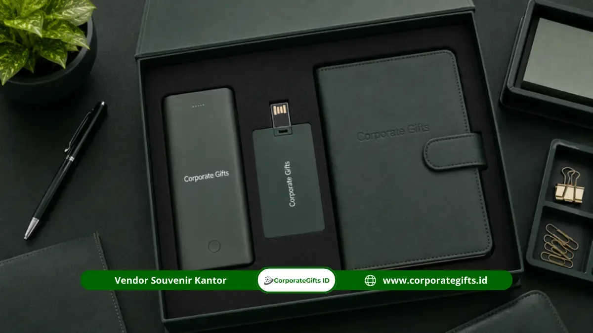

Corporate Gifts ID - Pengadaan souvenir tenaga pengajar dan merchandise dosen yayasan merupakan langkah strategis institusi pendidikan dalam membangun atmosfer kerja yang produktif, berdedikasi, dan penuh apresiasi. Mulai dari flashdisk kartu custom berkapasitas besar, powerbank berdaya tahan tinggi, hingga agenda kerja eksklusif berbalut cover kulit elegan, barang-barang penunjang aktivitas ini dipatok dengan kisaran harga mulai Rp35.000 hingga Rp150.000 per unit. Dengan estimasi pengerjaan 5 hingga 10 hari kerja, cinderamata fungsional ini tidak hanya menjadi simbol penghargaan formalitas, melainkan sarana kerja harian yang nyata mendongkrak efisiensi mengajar.
Poin Kunci Pengadaan Merchandise Tenaga Pendidik:
- Prioritas Nilai Utilitas Harian: Pilih produk yang mendukung mobilitas pengajaran seperti media penyimpanan data digital, pengisi daya cadangan, dan perlengkapan pencatatan agenda akademik.
- Efisiensi Anggaran Berjenjang: Tersedia pilihan ekonomis mulai Rp35.000 (flashdisk kartu) hingga paket bundle presentasi premium Rp150.000+ untuk dosen senior dan pimpinan fakultas.
- Ketepatan Momen Apresiasi: Distribusikan secara terencana pada momentum penting seperti Rapat Kerja Awal Tahun Ajaran, Hari Guru Nasional, akhir semester, maupun pelepasan purnabakti.
- Standarisasi Kualitas Antar-Batch: Yayasan disarankan memilih vendor berbadan hukum resmi yang sanggup menjamin konsistensi cetak logo dan spesifikasi material meski dipesan bertahap.
Souvenir Apa yang Paling Cocok untuk Tenaga Pengajar?
Souvenir yang paling relevan bagi tenaga pendidik adalah barang yang memiliki fungsi operasional tinggi dan tahan lama. Dosen dan guru memiliki rutinitas harian yang padat: berpindah antarkelas, memandu praktikum laboratorium, menyusun kurikulum materi kuliah, hingga menghadiri sidang proposal skripsi mahasiswa.
Oleh sebab itu, cinderamata yang diberikan yayasan idealnya bukan pajangan estetik semata, melainkan perlengkapan fungsional yang langsung mempermudah mobilitas mengajar. Pendekatan berbasis manfaat nyata ini memberikan nilai investasi jangka panjang bagi yayasan, sekaligus menumbuhkan rasa bangga dan keterikatan emosional staf terhadap institusi tempat mereka mengabdi.
Tabel Harga dan Spesifikasi Merchandise Staf Akademik
Untuk mempermudah biro pengadaan barang dan jasa yayasan dalam menyusun rencana anggaran biaya (RAB), berikut adalah tabel komparasi item merchandise yang paling banyak dipesan oleh institusi pendidikan:
| Nama Item/Paket | Material/Spesifikasi | Kisaran Harga (Rp) | Minimal Order (MOQ) | Estimasi Pengerjaan |
|---|---|---|---|---|
| Flashdisk Kartu Custom | PVC tebal, full-print UV 2 sisi, kapasitas 8GB - 64GB | Rp35.000 - Rp65.000 | 100 pcs | 5 - 7 hari kerja |
| Powerbank Kapasitas Tinggi | Bodi aluminium/ABS, 10.000 mAh, grafir laser logo presisi | Rp90.000 - Rp150.000 | 50 pcs | 7 - 10 hari kerja |
| Buku Agenda Kerja Hardcover | Kulit sintetis PU eksklusif, pita pembatas, deboss/hotprint gold | Rp45.000 - Rp85.000 | 50 pcs | 6 - 8 hari kerja |
| Executive Gift Set Bundling | Hardbox magnetik eksklusif: powerbank, flashdisk kartu, pulpen metal | Rp165.000 - Rp275.000 | 30 paket | 8 - 12 hari kerja |
Panduan Memilih Flashdisk Custom, Powerbank, atau Paket Bundling
Setiap item cinderamata akademik memiliki keunggulan tersendiri yang dapat disesuaikan dengan alokasi anggaran dan peruntukan acaranya:
- Flashdisk Kartu Custom: Sangat ideal untuk kebutuhan masal seluruh staf pengajar sekolah atau madrasah. Bentuknya yang pipih seukuran kartu ATM memudahkan penyimpanan di dompet, dan bidang cetaknya yang luas memungkinkan pencantuman logo yayasan, visi institusi, hingga foto gedung sekolah.
- Powerbank Fast Charging: Pilihan utama untuk dosen universitas yang kerap menggunakan laptop, tablet, dan smartphone saat memandu seminar maupun konferensi akademik nasional. Ketahanan baterai gawai mereka terjamin sepanjang hari tanpa khawatir kehabisan daya.
- Paket Bundling Presentasi: Kombinasi antara powerbank, pulpen metal grafir nama, dan flashdisk kartu yang disatukan di dalam kemasan hardbox berpita kain satin. Pilihan ini sangat cocok untuk pimpinan yayasan, dekan, rektorat, maupun dosen senior menjelang masa purnatugas.

Kombinasi paket gift set akademik fungsional dengan sentuhan branding personal yayasan.
Bagaimana Souvenir Menunjang Produktivitas Dosen dan Guru?
Ketersediaan fasilitas kerja penunjang yang memadai berdampak langsung terhadap efektivitas proses transfer ilmu pengetahuan. Ketika seorang pengajar dibekali alat bantu modern, kendala teknis saat mengajar di kelas dapat diminimalisir secara signifikan:
- Manajemen Jadwal Teratur: Buku agenda fisik membantu dosen mencatat tenggat pengumpulan nilai, draf jurnal penelitian, serta jadwal bimbingan skripsi tanpa khawatir terdistraksi notifikasi smartphone.
- Keandalan Akses Materi Ajar: Flashdisk kartu portabel memastikan salinan materi presentasi slide, modul digital, dan video pembelajaran selalu siap dihubungkan ke proyektor kelas meskipun jaringan internet kampus mengalami gangguan.
- Fleksibilitas Mobilitas Hybrid: Powerbank berkapasitas besar memberikan ketenangan bagi pengajar saat harus mengisi webinar daring lintas kota tanpa harus sibuk mencari stopkontak di ruang rapat umum.
Dampak Apresiasi terhadap Loyalitas dan Retensi Staf Pendidik
Di luar fungsi utilitasnya, pemberian souvenir fungsional berkualitas menyampaikan pesan moral mendalam: yayasan peduli dan menghargai jerih payah para guru serta dosen. Rasa dihargai (workplace appreciation) terbukti secara psikologis meningkatkan motivasi mengajar, menurunkan tingkat perputaran staf (turnover), dan memupuk budaya kerja yang harmonis di lingkungan akademik.
Kapan Waktu Terbaik Memberikan Souvenir kepada Pengajar?
Agar pemberian merchandise memberikan kesan yang mendalam dan relevan, pihak manajemen yayasan dapat menjadwalkan pembagian pada kalender momen berikut:
- Rapat Kerja Awal Tahun Ajaran: Dibagikan bersamaan dengan welcome kit guru untuk membakar semangat memulai semester perkuliahan baru.
- Hari Guru Nasional (25 November): Momentum resmi paling prestisius untuk memberikan apresiasi atas dedikasi dan pencapaian akademik para pendidik.
- Rapat Evaluasi Akhir Semester: Diserahkan sebagai bonus apresiasi atas kelancaran proses ujian akhir dan pelaporan administrasi rapor.
- Momen Pelepasan Purnabakti (Pensiun): Bentuk penghormatan tertinggi institusi atas dedikasi pengabdian puluhan tahun para guru dan dosen senior.
SOP Perencanaan Anggaran dan Manajemen Batch Yayasan
Bagi yayasan yang menaungi banyak unit sekolah atau fakultas, lakukan estimasi kebutuhan jumlah staf secara tahunan. Memesan merchandise dalam jumlah volume besar sekaligus (bulk order) jauh lebih menguntungkan karena mendapatkan diskon harga pabrik, biaya cetak setup yang lebih murah, dan memastikan warna identitas logo seragam di seluruh unit kerja.
Pastikan vendor pilihan Anda seperti merchandise perusahaan CorporateGifts.ID memiliki kelengkapan legalitas perpajakan seperti e-Faktur PPN, kuitansi resmi bertanda tangan, serta garansi unit rusak demi kelancaran laporan pertanggungjawaban dana BOS maupun yayasan.
FAQ Souvenir Tenaga Pengajar dan Merchandise Dosen Yayasan
Kesimpulan dan Rekomendasi Pengadaan
Memilih merchandise dosen yayasan dan souvenir tenaga pengajar yang fungsional adalah wujud nyata komitmen institusi dalam menciptakan iklim akademik yang berdaya saing tinggi. Dengan perpaduan desain modern, kegunaan praktis, dan sentuhan personalisasi identitas institusi, setiap cinderamata akan senantiasa dikenang serta menumbuhkan kebanggaan mengajar sepanjang masa.

Ditulis oleh: Arinda Zakia
Corporate Gifting Strategy SpecialistSpesialis strategi suvenir korporat dan cinderamata institusi pendidikan di CorporateGifts.ID. Berpengalaman lebih dari 7 tahun membantu ratusan instansi BUMN, universitas negeri, dan yayasan swasta dalam merancang cinderamata berstandar formal dan berkesan tinggi.
Lihat Profil Lengkap & Panduan Lainnya